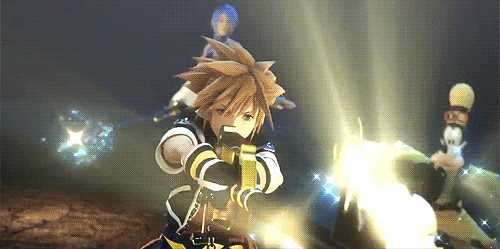

Experiencia Personal
En este último apartado hablaré en un tono más personal, contaré mi historia de esta saga y como ha llegado a ser de mis favoritas de todos los tiempos.
Corría el año 2010, en plena séptima generación de consolas, mis hermanos y yo teníamos un Xbox 360 el cual estaba libre de juegos de la saga Kingdom Hearts, ya que en esos tiempos Kingdom Hearts y sobre todo la saga principal numerada era exclusiva del PlayStation de Sony, principal competidor de Microsoft en el mundo de las consolas.
En ese mismo año, a mis dos primos, Brayan y Angel, les habían regalado un PlayStation 2 con God Of War y otros juegos, pero no fue hasta unos meses después cuando un primo nuestro decidió "prestarle" su Kingdom Hearts 2. Al principio nos fijamos que era un juego de Disney y nuestros animos cayeron, aunque tuvieramos 10 años nos criamos entre videojuegos violentos al estilo de God Of War o GTA. Entonces no se nos dieron las ganas en ese momento.
Cuando metimos el disco en la consola e iniciamos una nueva partida, quedé maravillado con el intro en CGI que te resumía la historia de Kingdom Hearts y Kingdom Hearts: Chain Of Memories.

Después de ese momento nos dimos cuenta de que no era otro juego infantil cualquiera, y nos propusimos completar la historia de este juego. El unico inconveniente que había era que en la epoca en que salió (2005) no se traducian los juegos en latinoamerica, por lo que teníamos que jugarlo en inglés.
A como le entendimos llegamos a el último nivel del juego, era dificil pero sabiamos que con el tiempo lo lograriamos. Hasta que llegó el día de la desgracia. El disco del juego había dejado de funcionar. Nos sentimos frustrados y ya nunca nos volvimos a juntar para jugar.
Cuando tenía 14 años, mi primo regaló su PlayStation2, pero yo ya estaba un poco más experimentado y descubrí que existían los emuladores de PS2, descargué uno y descargué la rom del juego en versión europea ya que dicha versión tenía soporte para el idioma español, aunque fuera castellano no me importaría. Cuando probé el juego en mi PC iba fatal, mi computadora no era lo suficientemente potente como para correrlo siquiera a 30fps, Sora parecía que tenía algún tipo de retraso o algo para habla por que ni en las escenas cinematicas el juego era estable.
Aun con todas las fallas que tenía, pude completar la historia del juego, y como almenos ya entendía de que estaban hablando, pude conocer la historia y me fascinó.
Hoy en día sigo esperando ese eterno Kingdom Hearts 3, Square Enix y Nomura ya anunciaron que lo lanzarían para este año, pero aun no han concretado una fecha exacta de lanzamiento, por lo que deja en duda si se va a lanzar este año.
Sin más por agregar, te pediría que te unieras a la espera de este juego que quizá nuestros nietos puedan disfrutar en su vejez.
